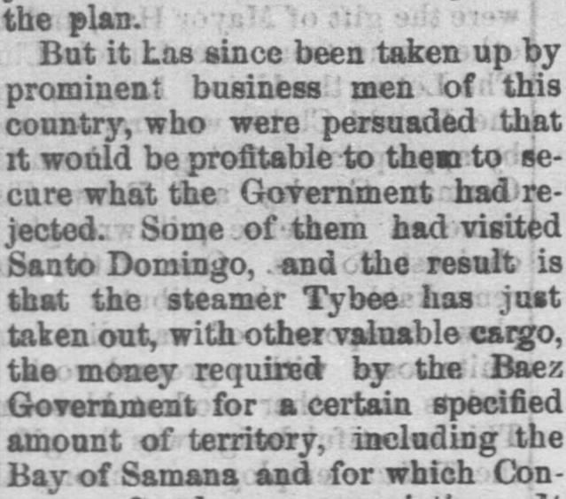
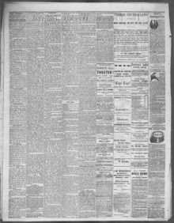

Some of them had visited Santo Domingo, and the result isAlgunos de ellos habían visitado Santo Domingo, y el resultado es
The Fremont Weekly Journal. Fremont, Sandusky County, Ohio, December 13, 1872. Page 2. Published by Wilcox & Greene, -1877. A weekly newspaper, 1867–1877.The Fremont Weekly Journal. Fremont, Sandusky County, Ohio, 13 de diciembre de 1872. Página 2. Publicado por Wilcox & Greene, -1877. Periódico semanal, 1867–1877. View the originalVer el original


See the full pageVer la página completaThe Fremont weekly journal reported on December 13, 1872, that a group of prominent American businessmen and merchants, independent of the government, raised money to secure territory in Santo Domingo—including the Bay of Samaná—that Congress had previously refused to fund. According to Mr. C. K. Garrison, the steamer Tybee was dispatched with this money and valuable cargo for the Báez Government to pursue the enterprise as a business venture.El Fremont weekly journal informó el 13 de diciembre de 1872 que un consorcio de acaudalados comerciantes y hombres de negocios estadounidenses, al margen del gobierno oficial, recaudó caudales para asegurarse un territorio en Santo Domingo —incluida la bahía de Samaná— cuya adquisición el Congreso se había negado a costear. De acuerdo con el Sr. C. K. Garrison, el vapor Tybee zarpó conduciendo dichos fondos y valiosas mercancías consignadas al gobierno de Báez a fin de poner en marcha la empresa bajo un esquema mercantil privado.
FULL TEXT:TEXTO COMPLETO:
The Fremont Weekly Journal December 13, 187213 de diciembre de 1872
SAMANA OURS.SAMANÁ ES NUESTRA.
The Money Sent to Baez by New York Merchants—Trade With Santo Domingo Secured.El dinero enviado a Báez por comerciantes de Nueva York—El comercio con Santo Domingo asegurado.
From the New York World, Dec. 7.Del New York World, 7 de diciembre.
It is now three and a half years since President Grant took up the subject of the annexation of Santo Domingo. The main idea urged in favor of the plan was that it was indispensible to the prosperity of American commerce for the United States to have in their possession a substantial territory in the West Indies. In June, 1869, the President appointed an agent to obtain information about the Dominican Republic, and General Babcock was finally sent out there. In September, 1869, he negotiated a preliminary treaty, which was approved by President Grant, and in November a regular treaty with President Baez was concluded. The matter was debated in Congress, a commission was sent to the island in January, 1871, and finally in April of that year President Grant relinquished the plan.Hace ahora tres años y medio desde que el presidente Grant tomó el tema de la anexión de Santo Domingo. La idea principal urgida en favor del plan era que era indispensable para la prosperidad del comercio estadounidense que los Estados Unidos tuvieran en su posesión un territorio sustancial en las Indias Occidentales. En junio de 1869, el Presidente nombró un agente para obtener información acerca de la República Dominicana, y el general Babcock fue finalmente enviado allá. En septiembre de 1869, negoció un tratado preliminar, que fue aprobado por el presidente Grant, y en noviembre se concluyó un tratado regular con el presidente Báez. El asunto fue debatido en el Congreso, una comisión fue enviada a la isla en enero de 1871, y finalmente en abril de ese año el presidente Grant abandonó el plan.
But it has since been taken up by prominent business men of this country, who were persuaded that it would be profitable to them to secure what the Government had rejected. Some of them had visited Santo Domingo, and the result is that the steamer Tybee has just taken out, with other valuable cargo, the money required by the Baez Government for a certain specified amount of territory, including the Bay of Samana and for which Congress refused an appropriation. It is reported in business circles that one gain that will accrue to the new company will be in the shape of the port dues.Pero desde entonces ha sido tomado por prominentes hombres de negocios de este país, que estaban persuadidos de que les sería provechoso asegurar lo que el Gobierno había rechazado. Algunos de ellos habían visitado Santo Domingo, y el resultado es que el vapor Tybee acaba de llevar, con otra valiosa carga, el dinero requerido por el Gobierno de Báez por una cierta cantidad especificada de territorio, incluyendo la Bahía de Samaná y para lo cual el Congreso negó una asignación. Se informa en círculos de negocios que una ganancia que devengará a la nueva compañía será en forma de los derechos portuarios.
The following coloquy with Mr. C. K. Garrison gives all the particulars upon the matter that are now obtainable:El siguiente coloquio con el Sr. C. K. Garrison da todos los particulares sobre el asunto que ahora pueden obtenerse:
Mr. Garrison, when found at his office at the Bowling Green, was at first unwilling to communicate what he knew upon this important subject, but finding that the main facts were already known to his visitor became more communicative.El Sr. Garrison, cuando fue encontrado en su oficina en el Bowling Green, al principio no estaba dispuesto a comunicar lo que sabía sobre este importante tema, pero al encontrar que los hechos principales ya eran conocidos por su visitante se volvió más comunicativo.
When asked, "Is it really true, that the Tybee has gone out with important lading connected with the new enterprise of the mercantile association that proposes tofollow up the Santo Domingo project?" he replied in substance, "Yes, a number of us, merchants and others, have concluded that we will accept the bargain that the government has refused. This is apart from all political considerations; is a mere matter of business."Cuando se le preguntó: «¿Es realmente verdad que el Tybee ha salido con importante carga conectada con la nueva empresa de la asociación mercantil que se propone seguir el proyecto de Santo Domingo?», respondió en sustancia: «Sí, varios de nosotros, comerciantes y otros, hemos concluido que aceptaremos el trato que el gobierno ha rechazado. Esto está aparte de toda consideración política; es un mero asunto de negocios.»
"What shape has your action taken?"«¿Qué forma ha tomado su acción?»
"We have raised the money demanded and sent it out in the Tybee, and will thus gain control of the Port of Samana, the finest in the West Indies, and capable of holding the navies of the world."«Hemos recaudado el dinero demandado y lo hemos enviado en el Tybee, y así ganaremos el control del Puerto de Samaná, el más fino de las Indias Occidentales, y capaz de contener las marinas del mundo.»
"You will have special rights and privileges, I suppose—be a sort of western 'East India Company?'"«Tendrán derechos y privilegios especiales, supongo—¿ser una especie de ‘Compañía de las Indias Orientales’ occidental?»
"Well, we are paying out a great deal of money, and of course we are not giving it for nothing, but expect ample returns."«Bueno, estamos pagando una gran cantidad de dinero, y por supuesto no lo estamos dando por nada, sino que esperamos amplios rendimientos.»
"Will not this first outlay need to be followed by other large expenditures for warehouses, etc.?"«¿No necesitará este primer desembolso ser seguido de otros grandes gastos para almacenes, etc.?»
"We don't know much about what will come after. We shall move cautiously, and be governed by circumstances."«No sabemos mucho acerca de lo que vendrá después. Procederemos con cautela, y nos gobernaremos por las circunstancias.»
"Are only New York capitalists in the enterprise?"«¿Están solo capitalistas de Nueva York en la empresa?»
"No; there are capitalists of Boston, Philadelphia and other towns in the movement."«No; hay capitalistas de Boston, Filadelfia y otras ciudades en el movimiento.»
"It appears to be a legitimate transaction. I suppose that many of you have long had mercantile dealings with those regions?"«Parece ser una transacción legítima. Supongo que muchos de ustedes han tenido desde hace mucho tratos mercantiles con esas regiones?»
"Yes; I, for one, have been running steamers to those islands, as far down as Brazil. I have no connection with the administration, and it is a matter of business with us all."«Sí; yo, por mi parte, he estado operando vapores hacia esas islas, tan lejos como Brasil. No tengo conexión alguna con la administración, y es un asunto de negocios para todos nosotros.»
"This is certainly a good way to settle a vexed question, and prevent further political controversy on the subject. But what is the condition of the island? Is there much industrial activity there?"«Esta es ciertamente una buena manera de resolver una cuestión molesta, y prevenir controversia política ulterior sobre el tema. Pero ¿cuál es la condición de la isla? ¿Hay mucha actividad industrial allí?»
"There is a large export trade of coffee and other tropical products; but the point of the greatest importance will be the possession by Americans of such a fine port in the West Indies?«Hay un gran comercio de exportación de café y otros productos tropicales; pero el punto de mayor importancia será la posesión por estadounidenses de tan fino puerto en las Indias Occidentales?»